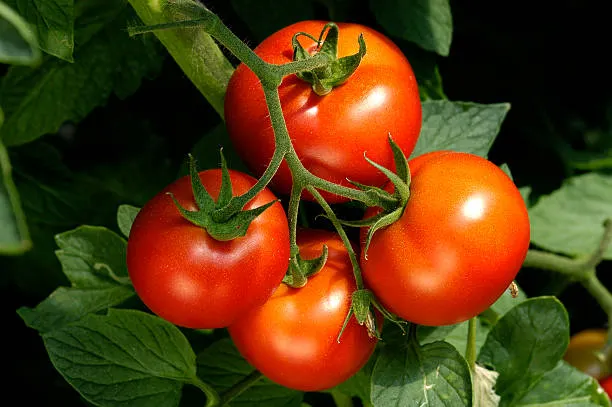
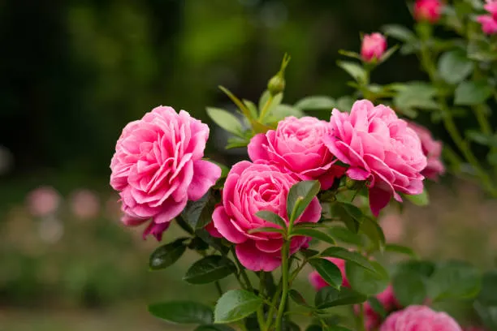

The Joy of Growing Your Own Tomatoes

An excerpt from the blog post about the satisfaction of harvesting your own ripe tomatoes...

An excerpt from the blog post about the satisfaction of harvesting your own ripe tomatoes...

A brief introduction to different types of roses that thrive in terrace gardens...